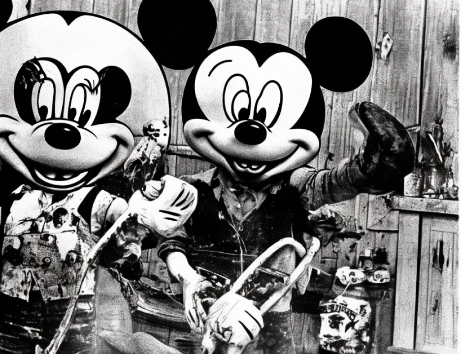

15 good photo of her in terms of the videos I have seen.
16 Q. And the next child is?
17 A. Nisha, I think.
18 Q. The gentleman at the head of the table with the grayish
19 beard?
20 A. Is Yakoub Hendricks. That's Sharhima Dalvie's father.
21 Q. And the woman next in the photograph?
22 A. Is Asma, and it's A-S-M-A. In my report, my spell check
23 seemed to make it asthma, but it's Asma.
24 Q. And who is Asma?
25 A. That's Sharhima Dalvie's mother.
8405
1 Q. And the final person in the photograph?
2 A. Farah.
3 MR. RUHNKE: Could we have photo number 83.
4 Q. Would you tell the jury what that shows? Who is the
5 gentleman on the left?
6 A. That's Abin Dalvie.
7 Q. And the gentleman on the right is Mr. Mohamed?
8 A. Yes, and they appear to be in the restaurant.
9 MR. RUHNKE: Could I have also photo number 102.
10 Q. Who is shown, who is the gentleman on the left in that
11 photograph?
12 A. That is, again, is Yakoub Hendricks, Sharhima Dalvie's
13 father. He is with Khalfan.
14 Q. And with regard to Yakoub, or without going into the
15 details, is he currently ill and unable to travel?
16 A. Yes.
17 MR. RUHNKE: We can take the photo down now, if you
18 like, please.
19 Q. To the best of your ability to ascertain from your
20 investigation, did Mr. Mohamed continue to work and live with
21 the Dalvie family in South Africa up to the date of his arrest
22 in October of 1999?
23 A. Yes.
24 Q. Did he use a false name while in South Africa particularly
25 Zahran Nassor Maulid?
8406
1 A. I think that was the name that he used. Sharhima just
2 said he gave her a long name and was hard to remember and
3 pronounce, so the family just always called him Nassor.
4 Q. So they referred to him as Nassor?
5 A. Yes.
6 Q. But there is no issue that he did not tell them his real
7 name?
8 A. That's correct.
9 Q. And just by way of a final bit of background, is it your
10 understanding from your review of documents and social
11 history, that in approximately January of 1998 Mr. Mohamed had
12 applied for a passport using the identification documents of
13 his friend Zahran Nassor Maulid?
14 A. Yes. I'm not sure of the date. I know it was early in
15 1998.
16 Q. And was it his plan, according to the 302 statement, at
17 least, to travel to London and basically start a new life?
18 A. Yes.
19 MR. RUHNKE: I have no further questions.
20 MR. FITZGERALD: I have no questions.
21 THE COURT: No questions. Thank you. You may step
22 down.
23 MR. RUHNKE: Your Honor, I offer K.K.M. 28, which is
24 the school record.
25 MR. FITZGERALD: No objection.
8407
1 THE COURT: Received.
2 (Defendant's Exhibit K.K.M. 28 received in evidence)
3 MR. STERN: We call Sharhima Dalvie.
4 THE COURT: Will we need an interpreter?
5 MR. STERN: Pardon me?
6 THE COURT: Will we need an interpreter?
7 MR. STERN: We will not. She speaks English.
8 SHARHIMA DALVIE,
9 called as a witness by the defendant,
10 having been duly sworn, testified as follows:
11 DIRECT EXAMINATION
12 BY MR. STERN:
13 Q. Ms. Dalvie, if you would pull the microphone close to you
14 so everyone can hear you.
15 A. Is that close enough?
16 Q. I don't know. Can people hear?
17 A. Close enough?
18 Q. Yes. Good.
19 Ms. Dalvie, where are you from?
20 A. South Africa, Cape Town.
21 Q. How long have you lived there?
22 A. All my life.
23 Q. And do you have a family there?
24 A. Yes, I do.
1